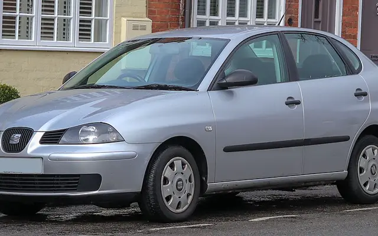

Par Motor › Precios por modelo › Seat Córdoba
Precio de segunda mano · noviembre de 2026¿Cuánto vale un Seat Córdoba de segunda mano?

Precio justo estimado de un Seat Córdoba usado en España, año por año, con los kilómetros normales para su edad y en buen estado: de 2.700 € a 5.300 €. Para tasar el tuyo con sus kilómetros reales y su estado, usa el tasador gratis.
Precios del Seat Córdoba por año
Córdoba (2002–2009)
Precio de nuevo: 1.4 75 CV, 13.000 € · 1.9 TDI 100 CV, 15.500 € · 1.2 64 CV, 12.000 €
| Año | Km normales | 1.4 75 CV · Gasolina | 1.9 TDI 100 CV · Diésel | 1.2 64 CV · Gasolina |
|---|---|---|---|---|
| 2009 | 100.000 km | 4.600 € | 5.300 € | 4.300 € |
| 2008 | 100.000 km | 4.300 € | 5.000 € | 4.000 € |
| 2007 | 100.000 km | 4.100 € | 4.700 € | 3.700 € |
| 2006 | 100.000 km | 3.800 € | 4.400 € | 3.500 € |
| 2005 | 100.000 km | 3.600 € | 4.100 € | 3.300 € |
| 2004 | 100.000 km | 3.300 € | 3.900 € | 3.100 € |
| 2003 | 100.000 km | 3.100 € | 3.600 € | 2.900 € |
| 2002 | 100.000 km | 2.900 € | 3.400 € | 2.700 € |
Kilómetros normales: 15.000 al año en gasolina, híbridos y eléctricos, y 20.000 en diésel, con un máximo de 100.000 km (por encima no tasamos: el precio depende demasiado del historial de cada coche). Cifras redondeadas a 100 €.
Preguntas frecuentes
¿Cuánto vale un Seat Córdoba de segunda mano?
Según el año, la versión y los kilómetros, un Seat Córdoba usado vale hoy de 2.700 € a 5.300 € en España. El más barato de nuestra tabla es un 1.2 de 2002 (2.700 €) y el más caro un 1.9 TDI de 2009 (5.300 €). Son precios justos estimados entre particulares y profesionales, con los kilómetros normales para su edad y en buen estado.
¿Cuánto valor pierde un Seat Córdoba al año?
Con unos años encima, un Seat Córdoba pierde alrededor de un 6 % de su valor cada año (calculado sobre el 1.4 de la generación Córdoba). Los primeros años la caída es mayor y a partir de los 70.000 km se acelera.
¿Qué motorizaciones tiene el Seat Córdoba?
En nuestra base de datos hay versiones gasolina y diésel, en 1 generación: Córdoba.
¿Cómo sé si me piden demasiado por un Seat Córdoba?
Abre el tasador de Par Motor, elige el Seat Córdoba, el año y los kilómetros reales, y escribe lo que te piden. Te diremos si está por debajo del precio justo (chollo) o por encima (caro). Es gratis y no pide registro ni matrícula.
Otros Seat
Compara su coste real
El precio de compra es solo una parte. Mira cuánto te costaría al mes con combustible, seguro, neumáticos, mantenimiento y lo que pierde de valor.
Abrir el comparador →